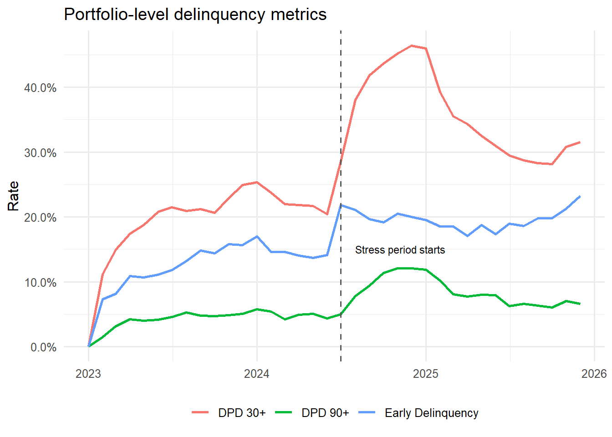
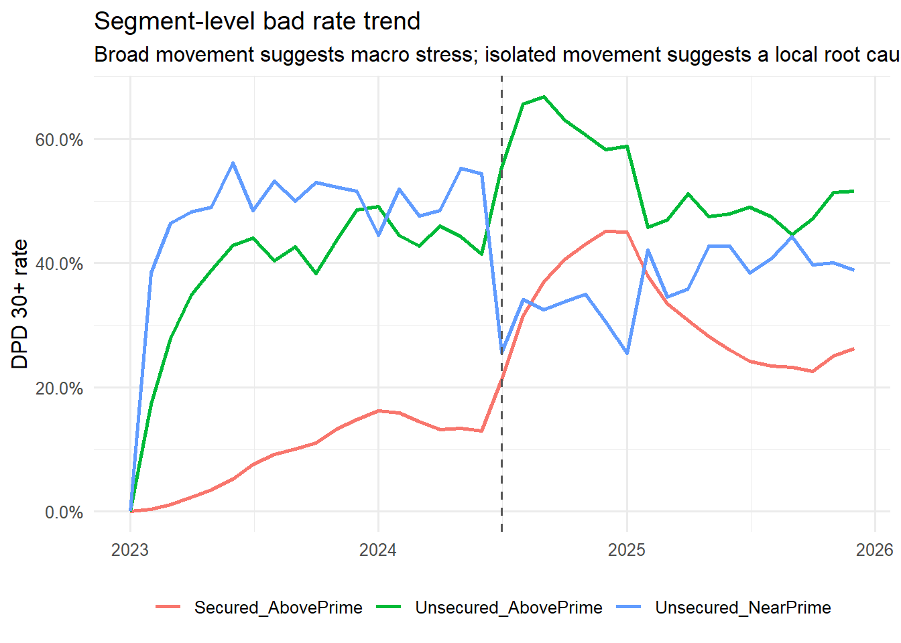
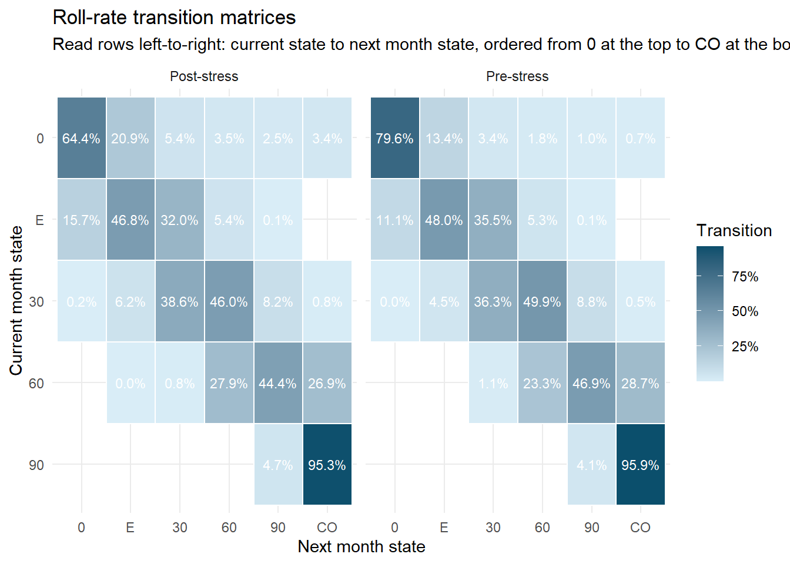
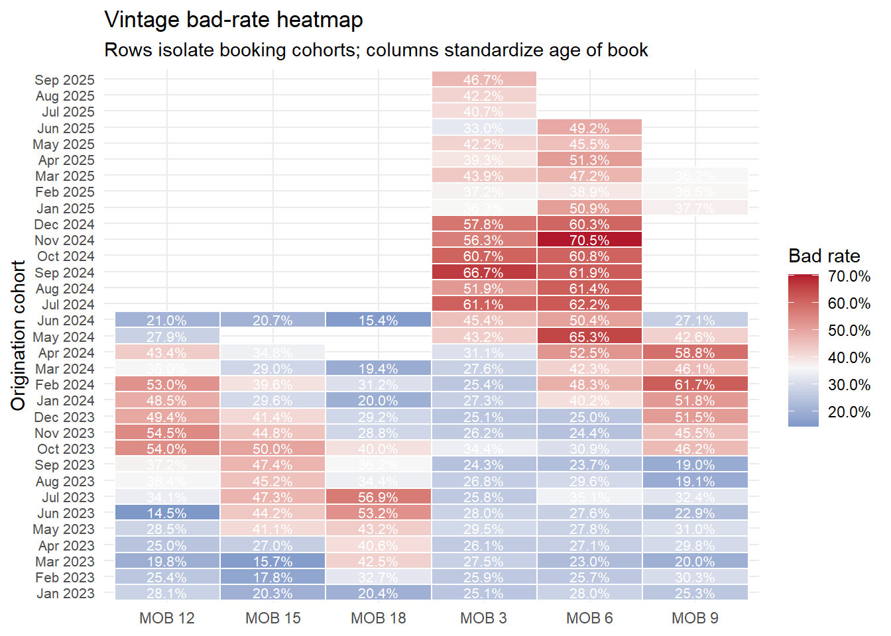
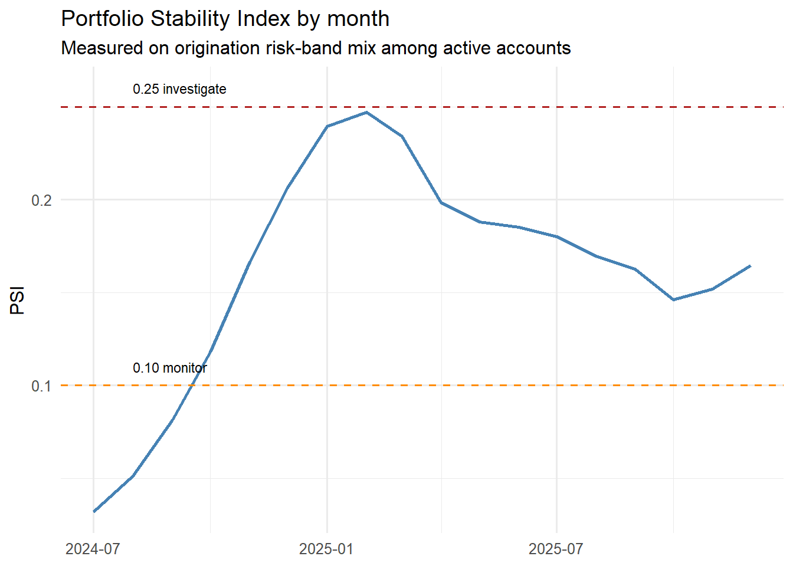
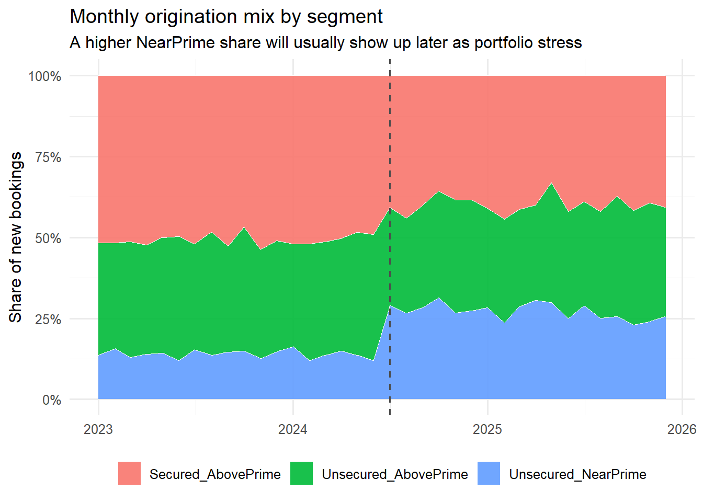
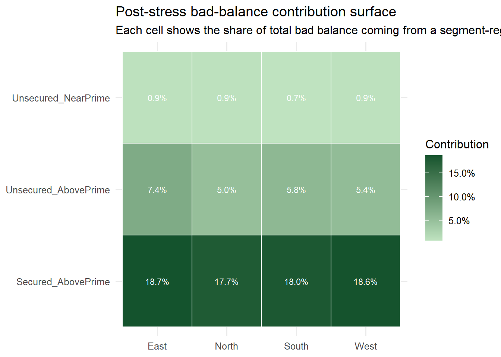
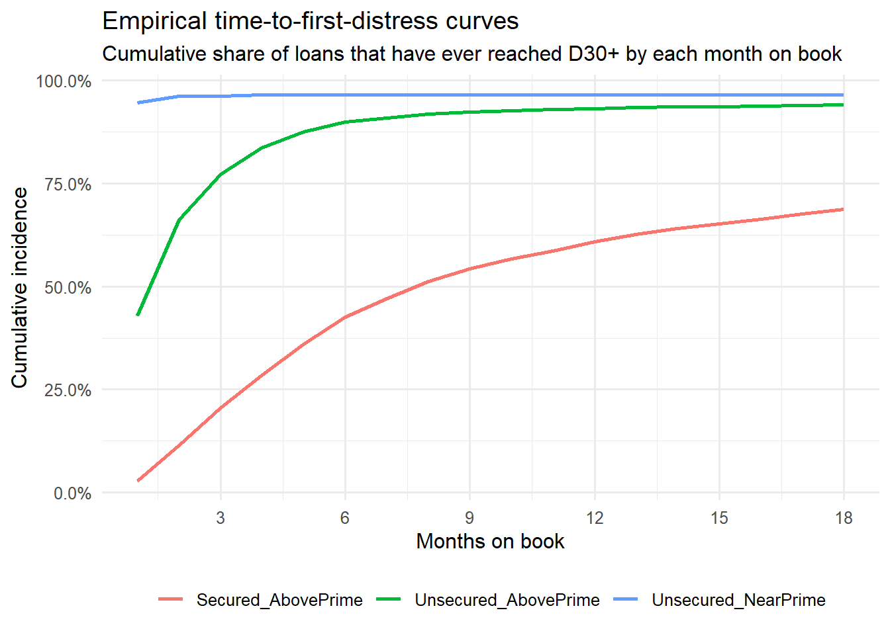
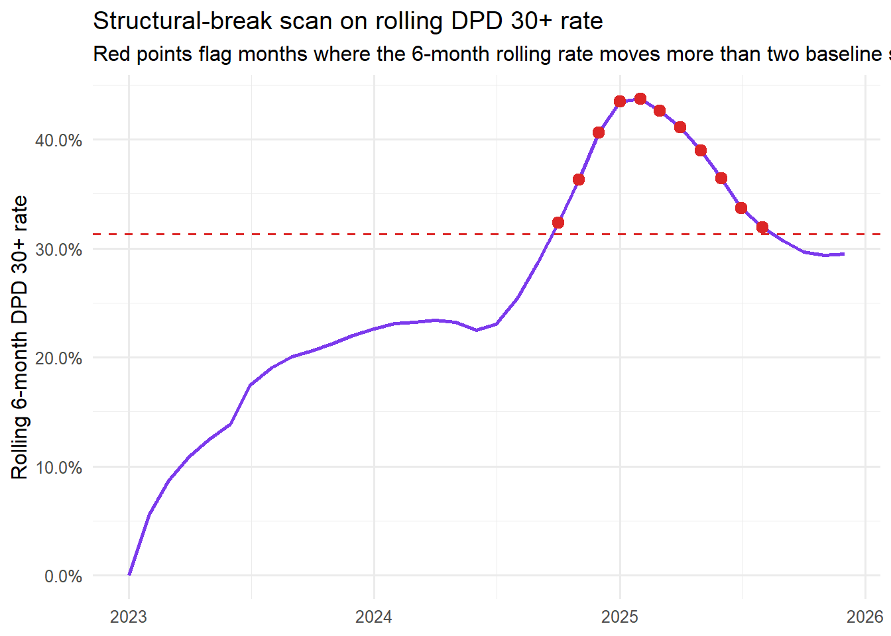
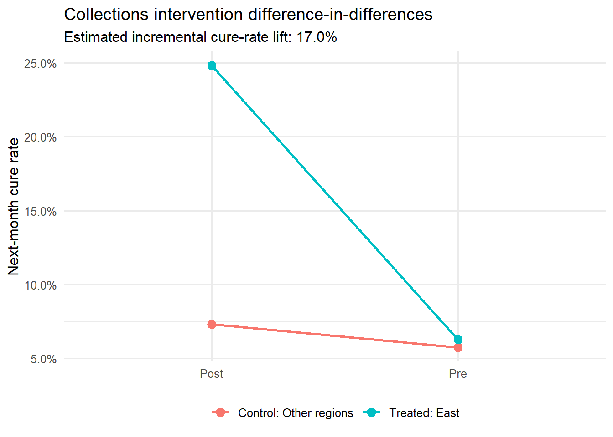

#pak::pkg_install(c("dplyr", "tidyr", "ggplot2", "lubridate", "scales", "knitr"))
library(dplyr)
library(tidyr)
library(ggplot2)
library(lubridate)
library(scales)
library(knitr)
library(tidyr)Root Cause Analysis for Credit Portfolios in R
R
Credit Risk
Analytics
When a credit portfolio starts deteriorating, tightening policy, intensifying collections, adjusting pricing, or narrowing channel focus may be considered. However, a portfolio may deteriorate because the mix of accounts changed, because risk segments are behaving differently than before, because a specific vintage has diverged from expectations, or because macro conditions have shifted the baseline for all segments. It is important to perform root cause analysis (RCA) to separate these mechanisms before taking action to ensure that the right levers are pulled and the right teams are mobilized.
In this post, we build a workflow in R that moves through three layers:
- Basic tools for locating deterioration.
- Advanced analyses for decomposing the movement.
- Causal reasoning for deciding what can and cannot be attributed to an intervention.
Required Packages
Synthetic Portfolio Panel
Instead of using real data, we’ll use synthetic monthly account-level data so the workflow includes transitions, vintages, and a staged collections intervention. A similar dataset would be requried to apply the workflow in production, but the methods would be the same.
set.seed(2026)
months_seq <- seq(ymd("2023-01-01"), ymd("2025-12-01"), by = "month")
stress_start <- ymd("2024-07-01")
intervention_start <- ymd("2025-02-01")
state_levels <- c("C", "E", "D30", "D60", "D90", "CO")
state_axis_labels <- c(C = "0", E = "E", D30 = "30", D60 = "60", D90 = "90", CO = "CO")
segments <- c(
"Secured_AbovePrime",
"Unsecured_AbovePrime",
"Unsecured_NearPrime"
)
regions <- c("East", "West", "South", "North")
channels <- c("Direct", "Aggregator", "Branch")
n_originations_per_month <- 300
build_originations <- function(month_value) {
mix <- if (month_value < stress_start) {
c(0.50, 0.36, 0.14)
} else {
c(0.40, 0.34, 0.26)
}
tibble(
origination_month = month_value,
loan_id = paste0("LN", format(month_value, "%Y%m"), "_", sprintf("%03d", seq_len(n_originations_per_month))),
segment = sample(segments, n_originations_per_month, replace = TRUE, prob = mix),
region = sample(regions, n_originations_per_month, replace = TRUE, prob = c(0.30, 0.24, 0.24, 0.22)),
channel = sample(channels, n_originations_per_month, replace = TRUE, prob = c(0.48, 0.32, 0.20)),
term_months = sample(c(24, 36, 48), n_originations_per_month, replace = TRUE, prob = c(0.25, 0.55, 0.20))
) %>%
mutate(
original_balance = case_when(
segment == "Secured_AbovePrime" ~ round(rlnorm(n(), log(22000), 0.30), -2),
segment == "Unsecured_AbovePrime" ~ round(rlnorm(n(), log(14000), 0.35), -2),
TRUE ~ round(rlnorm(n(), log(9000), 0.40), -2)
),
credit_score = case_when(
segment == "Secured_AbovePrime" ~ round(rnorm(n(), 735, 32)),
segment == "Unsecured_AbovePrime" ~ round(rnorm(n(), 690, 36)),
TRUE ~ round(rnorm(n(), 635, 42))
),
dti = case_when(
segment == "Secured_AbovePrime" ~ pmin(55, pmax(8, rnorm(n(), 21, 5))),
segment == "Unsecured_AbovePrime" ~ pmin(60, pmax(10, rnorm(n(), 27, 6))),
TRUE ~ pmin(70, pmax(14, rnorm(n(), 34, 7)))
)
) %>%
mutate(
credit_score = pmin(850, pmax(540, credit_score)),
origination_risk_band = cut(
credit_score,
breaks = c(-Inf, 620, 660, 700, 740, Inf),
labels = c("<620", "620-659", "660-699", "700-739", "740+"),
right = FALSE
)
)
}
# Build the origination panel by stacking monthly cohorts
originations <- bind_rows(lapply(months_seq, build_originations))
# Visualise portfolio mix to confirm the synthetic data generation is working as intended
originations %>%
count(segment) %>%
mutate(share = percent(n / sum(n), accuracy = 0.1)) %>%
kable(col.names = c("Segment", "Rows in panel", "Share of panel"))| Segment | Rows in panel | Share of panel |
|---|---|---|
| Secured_AbovePrime | 4898 | 45.4% |
| Unsecured_AbovePrime | 3684 | 34.1% |
| Unsecured_NearPrime | 2218 | 20.5% |
# Function to map severity values to delinquency states
bucket_state <- function(severity_value) {
case_when(
severity_value < 0.70 ~ "C",
severity_value < 1.02 ~ "E",
severity_value < 1.35 ~ "D30",
severity_value < 1.75 ~ "D60",
severity_value < 2.10 ~ "D90",
TRUE ~ "CO"
)
}
simulate_loan <- function(loan_row) {
available_months <- months_seq[months_seq >= loan_row$origination_month]
horizon <- min(length(available_months), loan_row$term_months)
snapshot_months <- available_months[seq_len(horizon)]
states <- character(horizon)
severity <- numeric(horizon)
outstanding_balance <- numeric(horizon)
treated_collections <- logical(horizon)
segment_risk <- case_when(
loan_row$segment == "Secured_AbovePrime" ~ 0.18,
loan_row$segment == "Unsecured_AbovePrime" ~ 0.28,
TRUE ~ 0.46
)
channel_risk <- case_when(
loan_row$channel == "Direct" ~ 0.00,
loan_row$channel == "Aggregator" ~ 0.08,
TRUE ~ 0.04
)
score_offset <- (720 - loan_row$credit_score) / 170
dti_offset <- (loan_row$dti - 25) / 50
for (i in seq_len(horizon)) {
mob_value <- i - 1
month_value <- snapshot_months[i]
macro_shock <- if (month_value >= stress_start) 0.24 else 0
vintage_shock <- if (loan_row$origination_month >= stress_start && loan_row$origination_month < ymd("2025-01-01")) 0.18 else 0
seasonal_shock <- if (month(month_value) %in% c(11, 12, 1)) 0.06 else 0
age_effect <- pmin(mob_value / 18, 0.28)
prev_state_penalty <- if (i == 1) {
0
} else {
c(C = 0.00, E = 0.10, D30 = 0.28, D60 = 0.55, D90 = 0.95, CO = 1.40)[states[i - 1]]
}
treated_collections[i] <- month_value >= intervention_start &&
loan_row$region == "East" &&
i > 1 &&
states[i - 1] %in% c("E", "D30")
treatment_effect <- if (treated_collections[i]) -0.22 else 0
if (i == 1) {
severity[i] <- segment_risk + channel_risk + score_offset + dti_offset + rnorm(1, 0, 0.12)
states[i] <- "C"
} else if (states[i - 1] == "CO") {
severity[i] <- severity[i - 1]
states[i] <- "CO"
} else {
severity[i] <- 0.42 * severity[i - 1] +
segment_risk + channel_risk + score_offset + dti_offset +
macro_shock + vintage_shock + seasonal_shock + age_effect +
prev_state_penalty + treatment_effect + rnorm(1, 0, 0.16)
states[i] <- bucket_state(severity[i])
}
scheduled_balance <- loan_row$original_balance * (1 - mob_value / loan_row$term_months)
outstanding_balance[i] <- if (states[i] == "CO") 0 else pmax(250, scheduled_balance + rnorm(1, 0, 120))
}
tibble(
loan_id = loan_row$loan_id,
origination_month = loan_row$origination_month,
snapshot_month = snapshot_months,
mob = seq_len(horizon) - 1,
segment = loan_row$segment,
region = loan_row$region,
channel = loan_row$channel,
credit_score = loan_row$credit_score,
dti = loan_row$dti,
risk_band = loan_row$origination_risk_band,
treated_collections = treated_collections,
dpd_state = factor(states, levels = state_levels),
outstanding_balance = outstanding_balance
)
}
build_portfolio_cohort <- function(cohort_data) {
cohort_rows <- lapply(seq_len(nrow(cohort_data)), function(i) simulate_loan(cohort_data[i, ]))
bind_rows(cohort_rows)
}
origination_cohorts <- split(originations, originations$origination_month)
portfolio <- bind_rows(lapply(origination_cohorts, build_portfolio_cohort))
portfolio %>%
count(segment) %>%
mutate(share = percent(n / sum(n), accuracy = 0.1)) %>%
kable(col.names = c("Segment", "Rows in panel", "Share of panel"))| Segment | Rows in panel | Share of panel |
|---|---|---|
| Secured_AbovePrime | 93047 | 48.0% |
| Unsecured_AbovePrime | 66707 | 34.4% |
| Unsecured_NearPrime | 34220 | 17.6% |
Basic Tools: Find Where the Portfolio Is Worsening
The first step is to identify where the book is deteriorating. This layer is about locating the problem so that deeper investigation can be performed on the right segment, vintage, or mechanism.
1. Headline Portfolio Trends
portfolio_metrics <- portfolio %>%
filter(dpd_state != "CO") %>%
group_by(snapshot_month) %>%
summarise(
total_accounts = n(),
total_balance = sum(outstanding_balance),
early_rate = mean(dpd_state == "E"),
dpd30_rate = mean(dpd_state %in% c("D30", "D60", "D90")),
dpd90_rate = mean(dpd_state == "D90"),
.groups = "drop"
)
portfolio_metrics %>%
pivot_longer(cols = c(early_rate, dpd30_rate, dpd90_rate), names_to = "metric", values_to = "rate") %>%
mutate(metric = recode(
metric,
early_rate = "Early Delinquency",
dpd30_rate = "DPD 30+",
dpd90_rate = "DPD 90+"
)) %>%
ggplot(aes(snapshot_month, rate, colour = metric)) +
geom_line(linewidth = 1) +
geom_vline(xintercept = stress_start, linetype = "dashed", colour = "grey35") +
annotate("text", x = stress_start + months(1), y = 0.15, label = "Stress period starts", hjust = 0, size = 3) +
scale_y_continuous(labels = percent_format(accuracy = 0.1)) +
labs(
title = "Portfolio-level delinquency metrics",
x = NULL,
y = "Rate",
colour = NULL
) +
theme_minimal(base_size = 12) +
theme(legend.position = "bottom")
If the headline series moves but every segment and vintage remains stable, the most likely explanation is denominator or mix. If both the portfolio and key sub-populations deteriorate together, the workflow has to move deeper.
In this chart, the dashed vertical line marks the start of the stress period. Read the three lines as a sequence: if early delinquency rises first and the more severe buckets follow with a lag, the problem is usually propagating through the portfolio rather than coming from a one-off reporting issue.
2. Segment Drilldown
segment_metrics <- portfolio %>%
filter(dpd_state != "CO") %>%
group_by(snapshot_month, segment) %>%
summarise(
accounts = n(),
bad_rate = mean(dpd_state %in% c("D30", "D60", "D90")),
.groups = "drop"
)
segment_metrics %>%
ggplot(aes(snapshot_month, bad_rate, colour = segment)) +
geom_line(linewidth = 0.95) +
geom_vline(xintercept = stress_start, linetype = "dashed", colour = "grey35") +
scale_y_continuous(labels = percent_format(accuracy = 0.1)) +
labs(
title = "Segment-level bad rate trend",
subtitle = "Broad movement suggests macro stress; isolated movement suggests a local root cause",
x = NULL,
y = "DPD 30+ rate",
colour = NULL
) +
theme_minimal(base_size = 12) +
theme(legend.position = "bottom")
This chart is most useful for separating a broad portfolio shock from a localized problem. If one segment peels away from the rest, focus on that segment’s underwriting, channel mix, pricing, or servicing; if all segments move together, macro pressure or a common policy shift is a more likely explanation.
3. Roll-Rate Transition Matrix
Roll rates distinguish new inflow from failed cures. That split matters because those two problems have different owners and different remedies.
transitions <- portfolio %>%
arrange(loan_id, snapshot_month) %>%
group_by(loan_id) %>%
mutate(next_state = lead(as.character(dpd_state))) %>%
ungroup() %>%
filter(!is.na(next_state), dpd_state != "CO")
compute_transition_matrix <- function(data, period_label) {
data %>%
count(dpd_state, next_state) %>%
group_by(dpd_state) %>%
mutate(probability = n / sum(n)) %>%
ungroup() %>%
mutate(
dpd_state = factor(dpd_state, levels = rev(state_levels)),
next_state = factor(next_state, levels = state_levels),
period = period_label
)
}
transition_plot_data <- bind_rows(
compute_transition_matrix(filter(transitions, snapshot_month < stress_start), "Pre-stress"),
compute_transition_matrix(filter(transitions, snapshot_month >= stress_start), "Post-stress")
)
transition_plot_data %>%
ggplot(aes(next_state, dpd_state, fill = probability)) +
geom_tile(colour = "white", linewidth = 0.4) +
geom_text(aes(label = percent(probability, accuracy = 0.1)), colour = "white", size = 3) +
facet_wrap(~period) +
scale_x_discrete(labels = state_axis_labels) +
scale_y_discrete(labels = state_axis_labels) +
scale_fill_gradient(low = "#d9edf7", high = "#0b4f6c", labels = percent_format(accuracy = 1)) +
labs(
title = "Roll-rate transition matrices",
subtitle = "Read rows left-to-right: current state to next month state, ordered from 0 at the top to CO at the bottom",
x = "Next month state",
y = "Current month state",
fill = "Transition"
) +
theme_minimal(base_size = 11)
Each row sums to 100%, so the chart separates fresh inflow from failed cures. More weight moving out of 0 into E or 30 signals new stress entering the book, while less weight moving from E or 30 back to 0 signals weaker collections recovery.
Interpretation rule:
- Higher
C -> EandC -> D30probabilities point toward inflow deterioration. - Lower
E -> CandD30 -> Cprobabilities point toward cure deterioration. - Larger
D30 -> D60orD60 -> D90probabilities indicate collections pressure or borrower stress intensifying.
4. Vintage Heatmap
Vintages tell you whether the problem was booked into the portfolio at origination or emerged later in the lifecycle.
vintage_metrics <- portfolio %>%
filter(dpd_state != "CO") %>%
group_by(origination_month, mob) %>%
summarise(
accounts = n(),
bad_rate = mean(dpd_state %in% c("D30", "D60", "D90")),
.groups = "drop"
) %>%
filter(accounts >= 40)
vintage_heatmap <- vintage_metrics %>%
filter(mob %in% c(3, 6, 9, 12, 15, 18)) %>%
mutate(
vintage_label = format(origination_month, "%b %Y"),
mob_label = paste0("MOB ", mob)
)
vintage_heatmap %>%
ggplot(aes(mob_label, reorder(vintage_label, origination_month), fill = bad_rate)) +
geom_tile(colour = "white", linewidth = 0.4) +
geom_text(aes(label = percent(bad_rate, accuracy = 0.1)), colour = "white", size = 2.8) +
scale_fill_gradient2(
low = "#2166ac",
mid = "#f7f7f7",
high = "#b2182b",
midpoint = median(vintage_heatmap$bad_rate),
labels = percent_format(accuracy = 0.1)
) +
labs(
title = "Vintage bad-rate heatmap",
subtitle = "Rows isolate booking cohorts; columns standardize age of book",
x = NULL,
y = "Origination cohort",
fill = "Bad rate"
) +
theme_minimal(base_size = 11) +
theme(axis.text.y = element_text(size = 8))
Read this as cohort-versus-age. A horizontal band of weak performance across one row points to booking quality in that origination cohort, while a vertical band at the same MOB across many rows points to a lifecycle or macro effect hitting several vintages at once.
Interpretation rule:
- A horizontal band of deterioration points toward origination quality or channel issues.
- A vertical band across many vintages at the same age points toward a macro or lifecycle event.
5. Portfolio Stability Index (PSI)
PSI is not a causal tool. It is a drift alarm that tells you something about the portfolio distribution has changed enough to justify deeper review.
\[ PSI = \sum_{i=1}^{n} (A_i - E_i) \cdot \ln\left(\frac{A_i}{E_i}\right) \]
psi_reference <- portfolio %>%
filter(snapshot_month < stress_start, dpd_state != "CO") %>%
count(risk_band) %>%
mutate(expected_share = n / sum(n)) %>%
select(risk_band, expected_share)
psi_monthly <- portfolio %>%
filter(snapshot_month >= stress_start, dpd_state != "CO") %>%
group_by(snapshot_month) %>%
count(risk_band) %>%
mutate(actual_share = n / sum(n)) %>%
ungroup() %>%
left_join(psi_reference, by = "risk_band") %>%
group_by(snapshot_month) %>%
summarise(
psi = sum((actual_share - expected_share) * log(pmax(actual_share, 1e-9) / pmax(expected_share, 1e-9))),
.groups = "drop"
)
psi_monthly %>%
ggplot(aes(snapshot_month, psi)) +
geom_line(linewidth = 1, colour = "steelblue") +
geom_hline(yintercept = 0.10, linetype = "dashed", colour = "darkorange") +
geom_hline(yintercept = 0.25, linetype = "dashed", colour = "firebrick") +
annotate("text", x = min(psi_monthly$snapshot_month) + months(1), y = 0.11, label = "0.10 monitor", hjust = 0, size = 3) +
annotate("text", x = min(psi_monthly$snapshot_month) + months(1), y = 0.26, label = "0.25 investigate", hjust = 0, size = 3) +
labs(
title = "Portfolio Stability Index by month",
subtitle = "Measured on origination risk-band mix among active accounts",
x = NULL,
y = "PSI"
) +
theme_minimal(base_size = 12)
The PSI line is a drift alarm, not a proof of causality. Crossing 0.10 is a prompt to review what changed in the active book mix; crossing 0.25 suggests the current portfolio composition is materially different from the pre-stress reference and deserves escalation.
Advanced Analyses: Decompose Why It Is Worsening
Once the basic tools locate the deterioration, the next question is mechanism. These methods decompose how much of the movement comes from mix, from within-segment rate changes, and from origination strategy.
7. Cohort Volume and Mix Decomposition
The segment mix at origination is a leading indicator of where future bad-rate pressure will come from.
origination_mix <- originations %>%
count(origination_month, segment) %>%
group_by(origination_month) %>%
mutate(share = n / sum(n)) %>%
ungroup()
origination_mix %>%
ggplot(aes(origination_month, share, fill = segment)) +
geom_area(alpha = 0.90, colour = "white", linewidth = 0.25) +
geom_vline(xintercept = stress_start, linetype = "dashed", colour = "grey30") +
scale_y_continuous(labels = percent_format()) +
labs(
title = "Monthly origination mix by segment",
subtitle = "A higher NearPrime share will usually show up later as portfolio stress",
x = NULL,
y = "Share of new bookings",
fill = NULL
) +
theme_minimal(base_size = 12) +
theme(legend.position = "bottom")
This is a leading-indicator chart. If the share of a riskier segment rises at origination, you should expect later pressure in portfolio metrics even before collections or monitoring performance changes.
8. Exposure-Weighted Contribution Surface
Account rates can overstate small-balance pockets and understate concentration in large exposures. A balance-weighted surface shows where bad balances are actually sitting.
contribution_surface <- portfolio %>%
filter(snapshot_month >= stress_start, dpd_state != "CO") %>%
mutate(is_bad = dpd_state %in% c("D30", "D60", "D90")) %>%
group_by(segment, region) %>%
summarise(
active_balance = sum(outstanding_balance),
bad_balance = sum(outstanding_balance[is_bad]),
balance_bad_rate = bad_balance / active_balance,
.groups = "drop"
) %>%
mutate(contribution_share = bad_balance / sum(bad_balance))
contribution_surface %>%
ggplot(aes(region, segment, fill = contribution_share)) +
geom_tile(colour = "white", linewidth = 0.5) +
geom_text(aes(label = percent(contribution_share, accuracy = 0.1)), colour = "white", size = 3) +
scale_fill_gradient(low = "#bfe3c0", high = "#14532d", labels = percent_format(accuracy = 0.1)) +
labs(
title = "Post-stress bad-balance contribution surface",
subtitle = "Each cell shows the share of total bad balance coming from a segment-region pocket",
x = NULL,
y = NULL,
fill = "Contribution"
) +
theme_minimal(base_size = 12)
Use this chart to distinguish rate from materiality. A cell can have a high bad rate but low balance impact, while another cell with a moderate bad rate may still dominate total bad balance because the exposure is much larger.
This is the fastest way to distinguish a high-rate problem from a materiality problem. If one cell contributes a disproportionate share of bad balance, that cell should usually be the first place to drill into pricing, exposure caps, and collections strategy.
9. Empirical Time-to-Distress Curves
Two segments can end with similar bad rates but deteriorate on very different timelines. A time-to-distress curve highlights whether risk is showing up early in the lifecycle or only after seasoning.
first_bad_event <- portfolio %>%
filter(dpd_state %in% c("D30", "D60", "D90", "CO")) %>%
group_by(loan_id, segment) %>%
summarise(first_bad_mob = min(mob), .groups = "drop")
time_to_distress <- originations %>%
select(loan_id, segment, term_months) %>%
left_join(first_bad_event, by = c("loan_id", "segment")) %>%
tidyr::crossing(mob = 1:18) %>%
filter(mob <= term_months) %>%
mutate(hit_by_mob = !is.na(first_bad_mob) & first_bad_mob <= mob) %>%
group_by(segment, mob) %>%
summarise(cumulative_bad_share = mean(hit_by_mob), .groups = "drop")
time_to_distress %>%
ggplot(aes(mob, cumulative_bad_share, colour = segment)) +
geom_line(linewidth = 1) +
scale_y_continuous(labels = percent_format(accuracy = 0.1)) +
scale_x_continuous(breaks = seq(0, 18, by = 3)) +
labs(
title = "Empirical time-to-first-distress curves",
subtitle = "Cumulative share of loans that have ever reached D30+ by each month on book",
x = "Months on book",
y = "Cumulative incidence",
colour = NULL
) +
theme_minimal(base_size = 12) +
theme(legend.position = "bottom")
The steeper the curve, the faster that segment converts from origination to distress. Early steepness usually indicates booking-quality or onboarding issues, while late steepness is more consistent with affordability compression or external macro drag.
This tool is useful when the question is not just how bad a segment becomes, but how quickly it gets there. Early-emerging stress usually points toward booking quality, while late-burn stress is more consistent with affordability compression or macro drag.
10. Structural-Break Scan
When teams rely only on visual inspection, they often overreact to noise or miss the true break. A simple rolling break scan is a cheap upgrade before reaching for a full state-space model.
break_scan <- portfolio_metrics %>%
arrange(snapshot_month) %>%
mutate(
rolling_6m = sapply(seq_along(dpd30_rate), function(i) {
mean(dpd30_rate[max(1, i - 5):i])
}),
baseline_mean = mean(dpd30_rate[snapshot_month < stress_start]),
baseline_sd = sd(dpd30_rate[snapshot_month < stress_start]),
break_z = (rolling_6m - baseline_mean) / baseline_sd,
flagged = break_z > 2
)
break_scan %>%
ggplot(aes(snapshot_month, rolling_6m)) +
geom_line(linewidth = 1, colour = "#7c3aed") +
geom_point(data = subset(break_scan, flagged), colour = "#dc2626", size = 2.8) +
geom_hline(aes(yintercept = baseline_mean + 2 * baseline_sd), linetype = "dashed", colour = "#dc2626") +
labs(
title = "Structural-break scan on rolling DPD 30+ rate",
subtitle = "Red points flag months where the 6-month rolling rate moves more than two baseline standard deviations",
x = NULL,
y = "Rolling 6-month DPD 30+ rate"
) +
scale_y_continuous(labels = percent_format(accuracy = 0.1)) +
theme_minimal(base_size = 12)
The red points are months where the rolling bad-rate trend has moved well outside the historical pre-stress range. That makes this chart useful for saying, “this looks like a real regime shift,” not just normal monthly volatility.
This is especially useful when you need to separate a true regime change from routine month-to-month volatility. Once a break is flagged, the next question is whether it lines up with a policy change, a mix shift, or an external shock.
Further Advanced Options for a Production RCA Stack
The baseline workflow above handles most recurring portfolio reviews. When the question is more specialized, extend the stack deliberately rather than adding methods at random.
| Advanced option | Best question answered | What it adds beyond baseline RCA |
|---|---|---|
| Survival or hazard model | When do defaults materialize? | Formal time-to-event modelling with censoring support |
| Balance-weighted loss decomposition | Where is loss materiality concentrated? | Exposure-sensitive prioritization beyond account rates |
| Hierarchical panel model | How much is segment, vintage, region, or macro? | Partial pooling for sparse slices |
| Changepoint or structural-break detection | When did the system really move? | More rigorous break timing than eyeballing charts |
| Dynamic factor model | Are several risk indicators moving because of one latent driver? | Shared-driver extraction across metrics |
| Markov-state stress testing | What happens if transition probabilities deteriorate further? | Forward scenario analysis using roll-rate matrices |
| Uplift or causal forest | Which borrowers respond to treatment? | Heterogeneous treatment effects for collections or hardship offers |
| Bayesian structural time series | What would the metric have done without the shock? | Counterfactual trend estimation for interventions |
Causal Relationships: From Signal Detection to Intervention Claims
Descriptive RCA and causal analysis are related, but they are not interchangeable.
- Descriptive RCA tells you where deterioration sits.
- Decomposition tells you what arithmetic driver explains the move.
- Causal analysis tells you whether a specific action changed the outcome.
That distinction matters because operations teams often ask causal questions using descriptive outputs. Examples:
| Business question | Descriptive tool | Why that is not enough | Better causal design |
|---|---|---|---|
| Did the new collections strategy improve cures? | Roll-rate and cure trend | Treatment may have targeted harder or easier cases | Difference-in-differences or matched comparison |
| Did tightening a channel cutoff reduce bad rates? | Vintage heatmap | Mix and macro may have shifted simultaneously | Event study or staggered rollout analysis |
| Did macro stress increase delinquencies? | Portfolio trends | Many internal changes happened too | Structural break plus external controls |
A Minimal Difference-in-Differences Example
The synthetic panel includes an East-region collections strategy rollout starting in February 2025. Treated accounts receive the new strategy only when they enter early delinquency.
cure_eval <- transitions %>%
mutate(
treated = region == "East",
post = snapshot_month >= intervention_start,
eligible = dpd_state %in% c("E", "D30"),
cured_next_month = next_state == "C"
) %>%
filter(eligible)
did_summary <- cure_eval %>%
group_by(treated, post) %>%
summarise(
cure_rate = mean(cured_next_month),
observations = n(),
.groups = "drop"
) %>%
mutate(group = if_else(treated, "Treated: East", "Control: Other regions"))
did_summary %>%
select(group, post, cure_rate, observations) %>%
mutate(
period = if_else(post, "Post", "Pre"),
cure_rate = percent(cure_rate, accuracy = 0.1)
) %>%
select(group, period, cure_rate, observations) %>%
kable(col.names = c("Group", "Period", "Cure rate", "Observations"))| Group | Period | Cure rate | Observations |
|---|---|---|---|
| Control: Other regions | Pre | 5.7% | 10851 |
| Control: Other regions | Post | 7.3% | 4975 |
| Treated: East | Pre | 6.3% | 4557 |
| Treated: East | Post | 24.8% | 2398 |
did_wide <- did_summary %>%
select(group, post, cure_rate) %>%
pivot_wider(names_from = post, values_from = cure_rate, names_prefix = "post_")
did_estimate <- (did_wide$post_TRUE[did_wide$group == "Treated: East"] - did_wide$post_FALSE[did_wide$group == "Treated: East"]) -
(did_wide$post_TRUE[did_wide$group == "Control: Other regions"] - did_wide$post_FALSE[did_wide$group == "Control: Other regions"])
did_summary %>%
mutate(period = if_else(post, "Post", "Pre")) %>%
ggplot(aes(period, cure_rate, group = group, colour = group)) +
geom_line(linewidth = 1) +
geom_point(size = 3) +
scale_y_continuous(labels = percent_format(accuracy = 0.1)) +
labs(
title = "Collections intervention difference-in-differences",
subtitle = paste("Estimated incremental cure-rate lift:", percent(did_estimate, accuracy = 0.1)),
x = NULL,
y = "Next-month cure rate",
colour = NULL
) +
theme_minimal(base_size = 12) +
theme(legend.position = "bottom")
For this chart, the key read is the gap-in-gaps rather than either line in isolation. If the treated line improves more after rollout than the control line does over the same period, that supports a plausible treatment effect rather than a general time trend.
The treatment effect estimate is only as credible as the design assumptions. For a practical credit portfolio RCA, the minimum causal guardrails are:
- Check for parallel pre-trends before the intervention.
- Avoid using treated accounts to define the control trend.
- Separate policy timing from macro timing whenever possible.
- Do not let a descriptive deterioration chart stand in for causal proof.
Guardrails and Governance
The workflow is useful only if it also makes uncertainty visible. A few guardrails prevent the most common RCA errors.
| Guardrail | Why it matters |
|---|---|
| Use rolling 3- or 6-month views for triggers | Payment timing and seasonality can distort single months |
| Enforce sample minimums by segment and vintage | Small slices produce unstable bad rates and extreme roll rates |
| Compare both account and balance views | A count-driven issue is different from a balance-driven one |
| Explicitly separate descriptive, decompositional, and causal claims | The wrong claim leads to the wrong intervention |
| Escalate persistent drift to model governance | Large PSI or concentrated rate effects can indicate scorecard or policy drift |
Decision Rubric
The purpose of RCA is not a prettier dashboard. It is a narrower decision set with clearer ownership.
| Observed signal | Primary tool | Likely root cause | Typical action |
|---|---|---|---|
Broad increase in C -> E inflow |
Roll-rate matrix | Borrower stress or weaker originations | Underwriting and affordability review |
| One vintage remains persistently weak | Vintage heatmap | Booking-era issue or channel lapse | Cohort policy review and channel deep-dive |
| Mix effect dominates | Shift-share | Strategic drift toward riskier segments | Rebalance origination mix |
| Rate effect dominates inside one segment | Segment drilldown + shift-share | Behavioural stress or collections weakness | Segment-specific collections or pricing action |
| Bad balance concentrates in one segment-region cell | Exposure-weighted contribution surface | Materiality concentrated in a specific pocket | Reprice, cap, or intensify treatment on that pocket |
| Distress appears earlier in one segment’s lifecycle | Time-to-distress curve | Early-book quality issue rather than late macro drift | Review booking policy, fraud, and onboarding controls |
| Rolling bad rate breaks above baseline band | Structural-break scan | Regime shift rather than ordinary noise | Escalate to policy review and macro attribution |
| PSI crosses escalation threshold | PSI | Portfolio distribution change | Monitoring escalation and model review |
| Cures improve only in treated group after rollout | Difference-in-differences | Plausible intervention impact | Expand, refine, or retest treatment |
Summary
For a credit portfolio, RCA should move from localization to decomposition and only then to causal interpretation.
- Use basic tools to identify where and when the portfolio moved.
- Use advanced decompositions to separate mix from within-segment deterioration.
- Use causal methods only when the question is about intervention impact, not just correlation.
That sequencing keeps the analysis honest and the resulting actions proportionate. A portfolio review that skips straight from a headline delinquency chart to policy changes is usually moving too fast to be right.